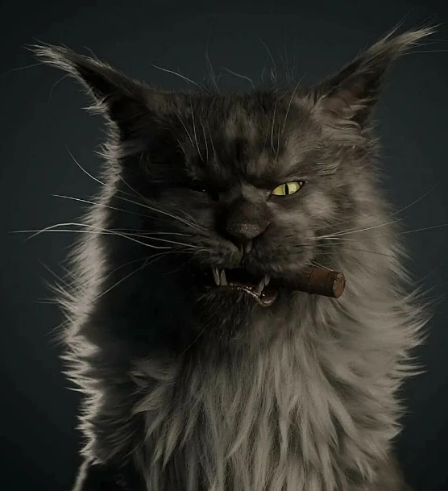

CSS3
Имя: Бегемот
Возраст: ♾️
Кот Бегемот — огромный черный кот-оборотень из свиты Воланда в романе "Мастер и Маргарита" Михаила Булгакова, способный принимать человеческий облик. Он любит пистолеты, шахматы, коньяк и устраивает хаос в Москве.
Кот Бегемот — огромный черный кот-оборотень из свиты Воланда в романе "Мастер и Маргарита" Михаила Булгакова, способный принимать человеческий облик. Он любит пистолеты, шахматы, коньяк и устраивает хаос в Москве.
Матроскин — кот из мультфильма "Трое из Простоквашино" Эдуарда Успенского, хозяйственный и практичный, носит тельняшку. Он друг дяди Фёдора и Шарика, занимается фермой, коровой и фотографией.
Кот в сапогах — хитрый и умный кот из сказки Шарля Перро, наследство младшего сына мельника. С помощью сапог, шляпы и мешка он обманывает людоеда, помогает хозяину жениться на принцессе и стать маркизом Карабасом.